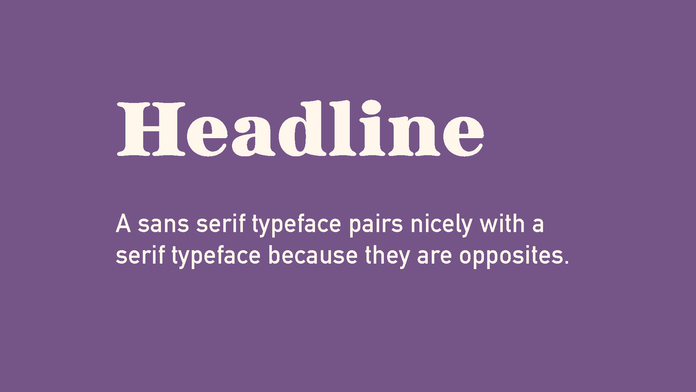
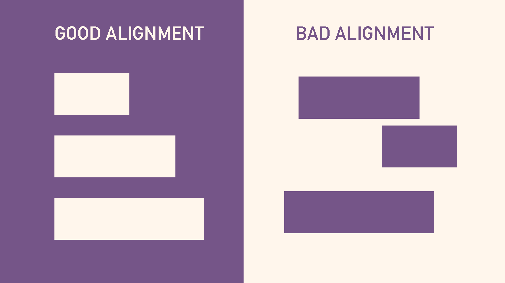
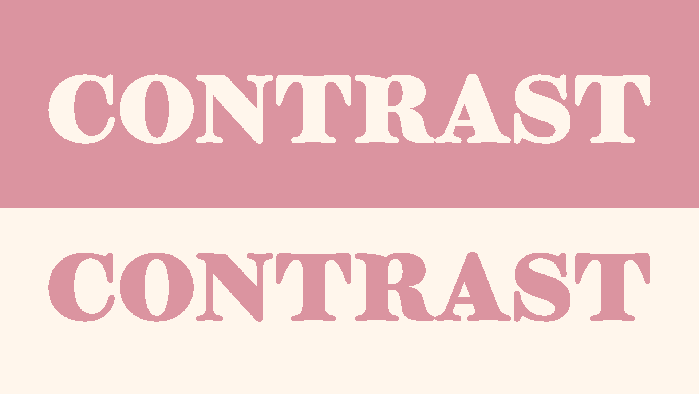
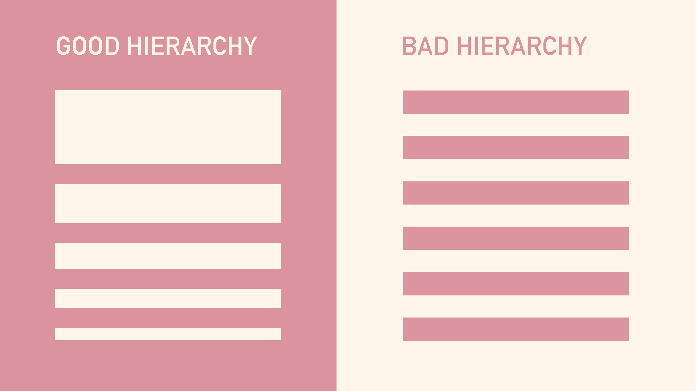

Concepts that define my style as a designer
Typography is vital for communication in design. Understanding the fundamentals of type and how to choose the best typeface pairings can improve your designs dramatically.
Let’s talk about the elephant in the room first. Font vs typeface, what’s the difference? Which is correct? The terms typeface and font are sometimes used interchangeably which can be a little confusing. So let’s put this context with an example. Helvetica is a typeface. But Helvetica Bold is a specific font within the Helvetica typeface family.
A typeface is a collection of fonts while a font refers to a specific style or weight within a typeface family.
No matter what you are designing, you should have a main font. When it comes to web design, most likely this will be used in your title or headline text. It’s meant to be an accent, to stand out, and influence the mood of your design. It doesn’t really matter what type of font it is, but knowing the first one will help you choose your second.

Image created by Jaqueline IbarraNow that you have a main font for your design, the best way to choose a good secondary font is to make sure it’s dramatically different yet complements the design. You wouldn’t want to choose two serifs that look similar, there is no contrast and in fact, it looks like a design mistake. One of these ways to choose fonts is to choose a pair of opposites. A good example of this is to use a big and bold serif for your headline and a nice traditional serif typeface for the body copy.
Alignment refers to how text or graphic elements are lined up on a page. This can refer to their alignment in relation to the entire composition (left, center, or right-aligned) as well as their alignment to one another.
When elements aren’t aligned properly, especially in relation to one another, it adds a sense of chaos to the composition. It looks haphazard and messy.
When it comes to this principle of design, be sure to align elements properly in relation to one another, and be consistent with the alignment of various elements, such as always centering headlines.

Image created by Jaqueline IbarraChoosing the right typeface combination can take some time. Don't be intimidated by the large number of typefaces out there – it's easy to get overwhelmed. Instead, try using filtering options to narrow down your choices. A good place to start is Google Fonts. There's plenty of free typefaces to choose from, feel free to explore and find something new to use in your next design.
If you're a web designer who struggles to create color schemes for websites, you're not alone. Choosing colors may seem intuitive, but in fact there's a lot of strategy that goes into creating effective color palettes. Everyone has subjective opinions on different colors – some people love bold, bright colors like cherry red and neon green, whereas others gravitate towards soft pastels. The challenge for web designers is to look past their subjective views, and those of their clients, in order to choose colors strategically.
If everything on your page looks like it has the same importance, then nothing appears important.
Contrast can be achieved through color, shape, size, or similar properties of elements, and refers to the differences between them. Color contrast is often the first thing people think of, but differences in the sizes of elements, their shape, or some other property also create contrast.
Contrast serves two very important functions. First, it allows you to make elements stand out from one another. A complete lack of contrast would result in a design that’s simply a single background color with no other visible elements — not exactly a functional design. A design where you can see different elements automatically has some level of contrast.

Image created by Jaqueline IbarraThe second important function of contrast is accessibility. Sufficient contrast between elements, especially text and its background, is vital for creating an accessible design. People with vision impairments can have a difficult time reading text on a screen that is too small or does not have sufficient color contrast.
Visual hierarchy is a vital part of good design. If everything on your page looks like it has the same importance, then nothing appears important. You need to use visual cues to tell people what to pay attention to first, second, third, etc. Create visual hierarchy through things like scale (the relative size of elements) and color. Typographic hierarchy can be created by using different typefaces, sizes, and font weights. The point is to make sure the most important element on the page stands out among the rest.

Image created by Jaqueline IbarraAn important part of the design process is research and inspiration. One of my favorite places to find design inspiration is on Pinterest. Let’s say I’m working on designing a poster to advertise an event. On Pinterest, I could search for “bold poster design" and get plenty of options. There's tons of fun typefaces and color palettes that might inspire your next design.